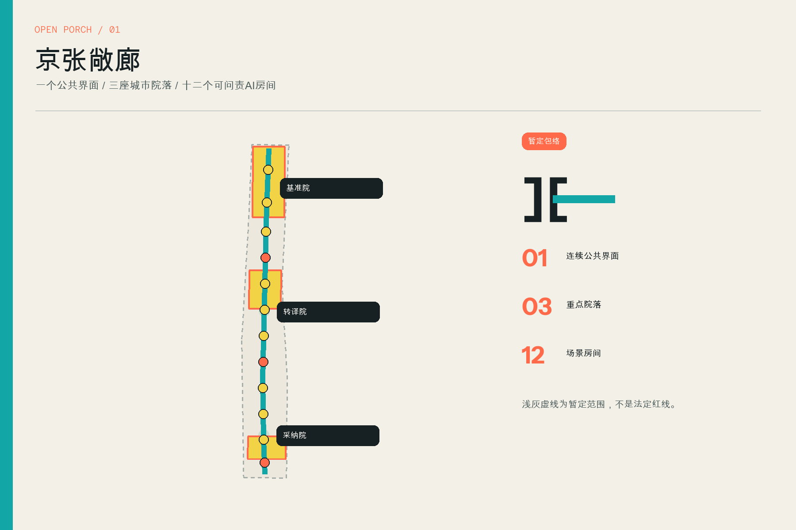
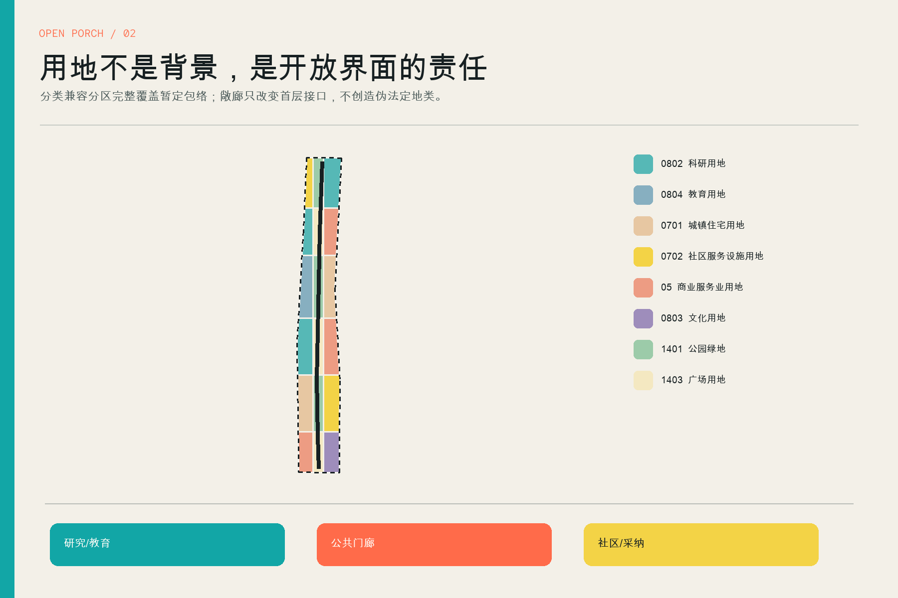
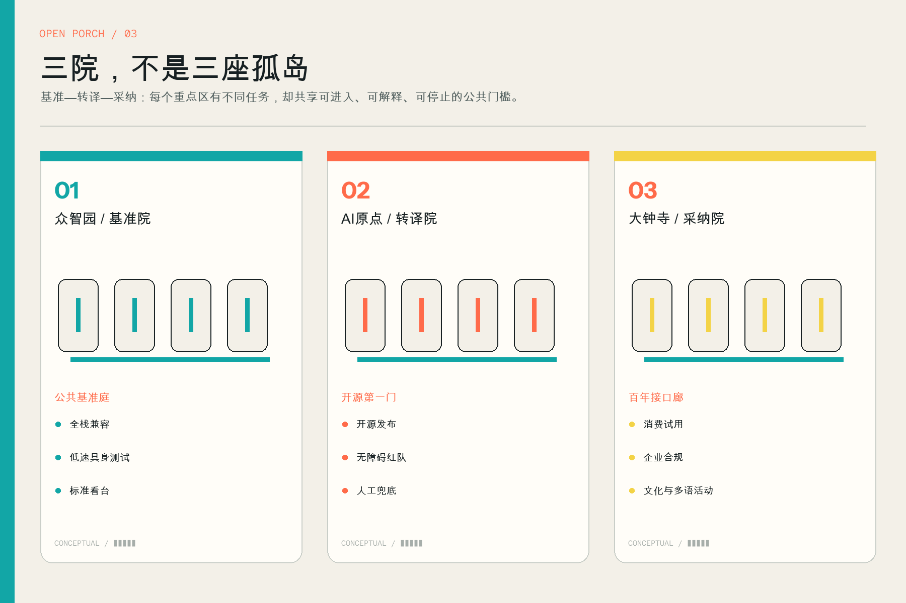
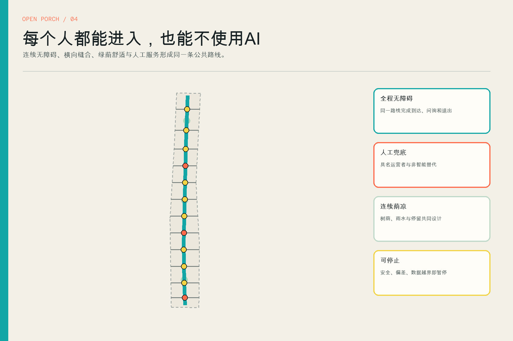
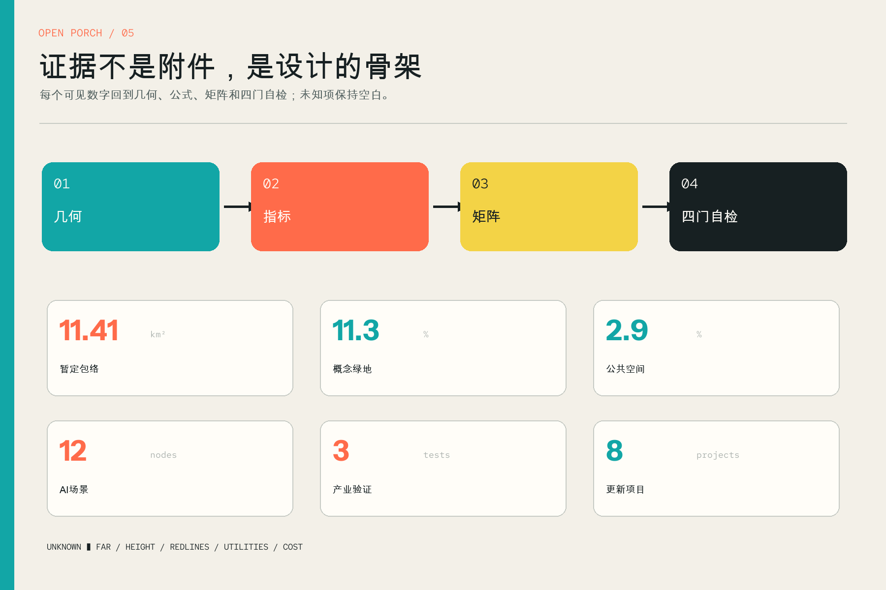

京张敞廊 JING-ZHANG OPEN PORCH
以一条可进入、可验证、可退出的公共敞廊，把众智园基准测试、AI原点技术转译与大钟寺市场采纳连接成三种城市院落；全部几何和指标保持暂定边界与概念设计的精度警示。
京张敞廊 / JING-ZHANG OPEN PORCH
一条公共界面，三座城市院落，十二个可问责的AI房间。所有空间均为概念性建议；暂定边界不构成红线。
设计依据与资料清单
本方案的主控依据是正式征集公告、面向智能体任务书与仓库公开场地包。公告给出三层研究范围、三处重点区域和成果深度；任务书补充六项智能体任务；场地包提供枚举、结构化校验规则与资料用途边界。方案把事实、设计建议、未知条件分开表达：来源见 sources.json，专业响应见 standard_matrix.json，深度响应见 design_depth_matrix.json。来源 标准
当前可公开使用的总体边界和三处重点区均为维护者根据公告文字与约面积形成的暂定多边形。方案保留原始来源与 official_boundary=false，仅把它们作为生成、展示和自检的临时包络；面积 11.41 平方公里是对该暂定多边形的复算，不是红线面积。仓库问题 #846 还提示该包络与公开地图中的遗址公园语境存在间距，因此任何文保、产权、道路和工程结论都不能由本图推断。来源 来源
图件采用“多孔精确”的证据语法：浅灰虚线表示低置信度包络，青色表示概念性公共界面，珊瑚色表示需要进入、验证或人工复核的门槛，黄色表示事件和场景节点。外部案例只提炼机制，不复制图像、尺寸或管制指标；所有效果和体量图均注明概念性。来源获取日、用途、限制和复用说明逐条保存在 sources.json。来源 深度

三层范围工作框架
三层范围不是三套互相孤立的图纸。统筹研究范围回答“AI生态需要怎样的城市接口”；总体设计范围把回答转成用地、慢行、蓝绿、建筑参考体量、项目和分期；重点区域再用三种院落检验方案是否能被技术团队、公众和运营者共同使用。每一层都输出可读叙事、空间对象、指标和复算触发条件。深度 空间数据
在统筹层，方案沿用正式任务的“三区两翼”作为协同背景，但不采用背景报道中与公告不一致的面积数字。北部众智园承担全栈基准与标准接口，中部AI原点社区承担高校成果到城市服务的转译，南部大钟寺承担企业采纳与日常消费；中关村服务翼提供企业服务，小月河场景翼提供城市验证。总体层只对公告约11.4平方公里的暂定包络生成几何，重点层只使用三处暂定范围，避免范围偷换。来源 空间数据
“一廊、三院、十二间”的结构贯穿三层：一条连续公共敞廊提供步行、遮荫、服务和可见测试；三处敞院分别成为基准院、转译院、采纳院；十二间门廊房间承载AI场景。空间并不保证实施，而是把未来专业深化必须回答的问题提前暴露：谁运营、使用什么数据、谁人工复核、何时停用、如何保留非智能通道。标准 指标
统筹研究范围产业与未来城市研究
全球案例研究选择六种互补机制：新加坡 one-north 的工作—生活—学习复合与社区营造，剑桥 Kendall Square/Volpe 的首层活力和公共空间责任，巴塞罗那 22@ 的产业集群与片区更新联动，伦敦 Knowledge Quarter 的成员网络和知识开放，巴黎 STATION F 的可读项目分区，多伦多 MaRS 的科研—企业—风投—采纳服务。它们共同说明：创新城区的差异不只在实验室数量，更在技术与城市之间是否有稳定的转译界面。来源 来源 来源
本方案不复制案例形态，而把机制压缩成一条“门廊协议”：实验室或企业先在北部基准院完成技术兼容、安全和标准说明；再到中部转译院接受普通用户、无障碍和人工兜底检验；最后在南部采纳院通过小规模、可停止的真实使用验证。每一次跨门槛都产生公开说明、责任人、使用期限和退出条件，使“世界级生态”能够被空间和治理共同审查。来源 来源 来源
空间结构因此不是产业名录的地图化，而是把研发、开源、企业服务、公共体验、生活配套和国际交流组织成可步行的公共前台。西侧服务翼连接政策、法务、算力、融资与人才服务，东侧场景翼连接社区、河道绿地和公共服务测试；敞廊承担两翼之间的低门槛会面。六类画像与十二场景保证产业策略回到具体使用者，而不是只为“理想人才”设计。深度 指标
总体设计范围城市更新与控规深度城市设计
总体层以暂定包络为计算边界，生成完整无缝的分类兼容用地分区、连续慢行线、十二条横向接口、蓝绿界面、公共门廊房间、参考体量与三期项目范围。用地多边形在 EPSG:4548 中按共同边界切分后反投影，覆盖率为100%，不以重叠色块掩盖缝隙；图层可由仓库空间审查脚本重算。空间数据 标准
总体设计的核心动作是“开门而非造轴”。科研、教育、居住、社区服务、商业、文化、绿地与广场不必被一条新地块吞并，而是在面向敞廊的一层形成可进入界面：透明测试间、人工服务桌、低成本临时工位、遮荫座椅、贡献账本和可逆展架。参考建筑基底只检验界面节奏与覆盖比例，不代表现状测绘、拆改留结论或建设规模。空间数据 深度
复算得到概念绿地功能面积约 129.2 公顷、公共空间约 33.7 公顷、参考建筑基底约 16.8 公顷。它们只对本次几何成立；容积率、建筑高度、退线、道路红线、公共服务定额和市政容量保持未知。取得正式边界、控规、权属、现状建筑和管线后，必须整体裁切并重跑指标、图件与项目清单，而不是手工修改报告数字。指标 指标

重点区域详细设计
北部众智园被设计为“基准院”：以公共基准庭为地标，把全栈兼容、具身智能低速共享边界、标准制定和安全说明放进公众可看见但不干扰研发的门廊。空间动作是以轻型檐架连接研发入口、绿地和对外交通界面，并设置事故停用、访客隔离和人工讲解。精确落位必须等待众智园正式边界、权属和安全分区。空间数据 深度
中部AI原点社区是“转译院”：开源第一门记录可核验贡献与第一次公共发布，大学成果在此接受普通语言解释、无障碍路径、隐私最小化和非智能替代检验。校区、园区、社区与轨道站之间用连续步行门廊缝合；人才服务不是独立贵宾厅，而与居民服务桌共用可见前台，使新技术先学会服务不同能力的人。空间数据 标准
南部大钟寺是“采纳院”：百年接口廊把京张文化叙事、智能终端试用、企业合规副驾、家庭照护导航和多语活动放入可逆展廊。重点不是打造永久科技橱窗，而是围绕站点和四象限步行联系建立可进入、可比较、可退出的试用环境；商业采纳必须保留人工投诉、设备停用与不采集个人轨迹的默认模式。空间数据 标准

AI 创新生态、人才画像与 AI+ 场景
六类画像覆盖开源开发者、初创与中小团队、企业/科研运营者、居民与家庭、高校师生与访客、老人/残障者/低数字熟练者。画像不是人口统计，而是设计测试工具：同一门廊必须同时回答工作、学习、停留、解释、无障碍和人工替代需求。若一个AI服务只能被熟练用户顺利使用，它就没有通过公共门槛。指标 来源
十二张场景卡全部落到 SCN-01—SCN-12 节点，并记录服务对象、最低数据、禁止数据、人工复核和停用规则。其中三项明确作为产业测试验证：全栈兼容基准台、低速具身智能共享边界测试、公共服务模型可达性红队；其余包括开源发布、无障碍导航、人工兜底、文化解说、微气候、消费试用、企业合规、家庭照护和多语活动。空间数据 指标
公共场景默认采用目的限定、最小数据和非识别性计数，不设置隐蔽人脸识别、持续录音、精细个人轨迹、自动医疗诊断或信用评分。影响权益的输出必须由具名运营者复核，现场有非智能替代；出现安全事件、无法解释的偏差、超范围采集、无障碍兜底失效或占用公共空间时立即暂停。具体合规仍需由部署主体按适用法律与服务类型审查。标准 [assumption:A-SCENARIO-001]
用地、建筑规模与拆改留方案
用地以国家分类子集表达科研、教育、居住、社区服务、商业服务、文化、公园绿地和广场，方案性名称只作为场景注释，不替代 land_use_code。中央窄带交替设置公园绿地与广场，避免把“敞廊”误解为一条巨型道路或单一公园；东西两侧承载多元功能，通过横向公共接口而不是封闭围墙建立联系。空间数据 标准
建筑层只提供可逆、低层门廊组团的参考基底，用来检验首层开放界面和场景房间的节奏。高度、总建筑面积、容积率、退线和消防间距均未赋值。拆改留采用“先调查、后分类”的程序：具备历史、结构或持续使用价值的建筑优先保留；适合开放首层的进行轻改；只有经结构、权属、价值与全生命周期评估后才讨论拆除。当前图层不得被解释为现状建筑清单。空间数据 深度
六个组件支持低成本迭代：门廊檐架、无障碍门槛、人工服务桌、透明测试柜、可逆插件间、贡献账本。它们可先作为活动设施或室内改造试点，待正式规划与工程条件明确后再决定是否形成永久建设。参考覆盖率只是方案内部校核值，不能进入土地出让或规划许可条件。指标 来源
交通、轨道、市政与公共服务设施
交通结构由一条南北连续步行主线和十二条横向接口组成，三处接口重点衔接轨道或公共交通语境，其余以步行、自行车和绿道为主。线路是空间连通意向，不是道路红线；每个接口在深化时须核查高差、过街、产权、消防、车流与站点管理。无障碍连续性以“不绕行、不被设备占用、可找到人工帮助”为验收目标。空间数据 深度
停车不以增加地面车位为默认答案。优先做站点接驳、共享停车信息、非机动车有序停放和活动日交通管理；低速机器人测试只在物理边界、速度、时段、人工接管和事故停用均明确后开放。老年人、残障者和没有智能手机的人能够沿同一路线完成到达、问询与退出，不被迫使用AI服务。标准 指标
市政与新型基础设施采取“预留而不虚构容量”：门廊模块预留可断电的边缘计算柜位、公开状态灯、检修面和雨水学习界面；不绘制不存在的电力、通信、给排水或燃气网络。公共服务设施以三处人工兜底桌和移动服务模块起步，具体规模、用电、防火、数据安全和运维成本必须由相应专业核查。空间数据 深度
蓝绿空间、公共空间与城市风貌
蓝绿系统不是背景色，而是连续敞廊的基本舒适设施。约62米概念缓冲带承担树荫、雨水渗滞、步行和生态踏脚石，三处较大的绿荫院落对应基准、转译和采纳活动。所有宽度与面积都是设计测试值，待地下管线、树木、海绵专项和正式绿地控制线确认后调整。空间数据 指标
公共空间由十二个圆角门廊房间组成，尺度有意小于大广场，使场景可被关闭、迁移或替换。青色界面保证连续，珊瑚节点提示进入和复核，黄色只用于临时事件；暖象牙、炭黑与轻型金属形成克制底色。建筑首层强调多孔、可见、可停留，不用夸张未来主义立面代表AI。空间数据 标准
三个荣誉节点构成“AI朝圣”路线：北部公共基准庭表彰可复现标准，中部开源第一门记录可核验贡献，南部百年接口廊展示技术被真实城市采纳后的长期影响。文化叙事不把京张遗产当装饰素材，而用“连接、开放、贡献、复核”延续百年基础设施的公共精神；精确遗产落位须等待权威调查与保护范围。指标 [assumption:A-HERITAGE-001]

更新项目清单、实施政策与分期计划
八个更新项目按“先可逆、后固定”排序：一期启动十二门廊先导包、三处人工兜底桌和南段四象限步行预研；二期建设AI原点开源发布门廊、连续无障碍荫凉线路、透明测试间和标准看台；三期在正式条件成熟后推进北段全栈基准院，并建立年度贡献账本和城市节事。每项都记录运营、权属、测绘或安全依赖。指标 空间数据
实施政策建议采用“场景许可证 + 公共界面协议”：每个试点明确期限、运营者、数据目的、人工复核、停用规则、无障碍替代和撤场责任；每处门廊的首层开放时间、维护主体、噪声边界和投诉入口纳入协议。正式规划、建设、招采和数据合规程序仍由有权主体依法开展，本提案只提供可供深化的治理原型。标准 [assumption:A-CONTROLS-001]
长期运营按四季循环：春季开源第一门发布周，夏季无障碍与荫凉压力测试，秋季全球城市AI接口论坛，冬季百年贡献账本复盘。社区共治小组、开发者委员会、无障碍顾问、运营者和专业团队共同决定场景续期；没有公开复盘或出现不可接受风险的场景自动失效，而不是凭“示范”名义长期占用公共空间。来源 深度
指标体系、面积复算与合规矩阵
指标从几何而不是版面数字产生：暂定场地 11412825 平方米，概念绿地比例 0.1132，公共空间比例 0.0295，参考建筑覆盖比例 0.0148；另有3处重点区、12个场景、3个产业测试、6类画像、6个全球案例、3个荣誉节点和8个更新项目。面积和长度均在 EPSG:4548 中复算。指标 指标 指标
这些数值分为三类：场地面积属于“对暂定多边形已知”；绿地、公共空间、建筑基底和线路属于“对概念设计已知”；容积率、最大高度、退线、停车、设施容量与投资属于“未知”。已知不等于官方，低置信度值随正式边界和控规替换而变化。metrics.json 保存公式、来源文件、置信度和假设，图件只显示其可读摘要。深度 来源
合规矩阵覆盖公告1.3、1.4、1.5和agent.1—agent.6；标准矩阵覆盖五项必选依据及AI治理、无障碍两项窄范围参照；深度矩阵覆盖15项正式设计深度。自检分确定性文件验证、空间拓扑、离线可视化和专业证据四门，任何一门失败都不能标为待评审。标准 深度

风险、版权与合规说明
首要风险来自资料精度：正式边界、重点区、文保、权属、控规、道路、市政和现状建筑数据不齐。方案用空约束层、低置信度、未知指标和复算触发条件处理，而不以推测补齐。空间争议、技术成熟度、公众接受、隐私、公平、运维和政策不确定性均需在项目进入下一阶段前由责任主体复核。[assumption:A-BOUNDARY-001] 深度
AI服务风险通过最小数据、具名人工复核、非智能替代、公开状态、期限和停用规则降低；这些是设计建议，不替代具体法律意见、安全评估、备案、等保或伦理审查。生成式AI法规仅在面向境内公众提供生成内容服务的适用边界内引用，无障碍人工服务要求只按法律列举的服务事项理解，不扩大成未经核验的普遍义务。标准 标准
本提案原创文本、代码生成图件、Logo和版面按 COMMUNITY-DISPLAY-ONLY 参与条款提供展示；外部来源只作引用与机制分析，不复制第三方受保护图像。任何合成或概念性体验图都标为“非现状、非审批、非建设承诺”。详细声明见 report/copyright_statement.md。来源 [assumption:A-MEDIA-001]
参考资料
正式依据包括征集公告、智能体任务书、城市设计管理办法、控制性详细规划编制审批办法和用地分类指南；窄范围合规参照包括生成式人工智能服务管理暂行办法与无障碍环境建设法。仓库 sources.json 保存标题、发布者、链接、获取日期、用途、限制和复用说明，避免在正文堆积机器索引。来源 来源 来源
全球机制案例为 JTC one-north、Cambridge Kendall Square/Volpe、Barcelona 22@、Knowledge Quarter London、STATION F 和 MaRS Discovery District。它们只支撑开放首层、社区营造、片区更新、成员网络、项目可读性和成果转译等机制判断，不作为北京场地的尺度、强度、法规或成本依据。来源 来源 来源
可复核数据包括九个GeoJSON图层、metrics.json、三类矩阵、visual/assets/program.json、双语HTML、A3文册与A0展板。专业团队获得正式边界后，应先替换锁定图层，再运行空间审查与四门自检；若只修改报告数字而不更新几何和哈希，本包应判定失效。空间数据 指标